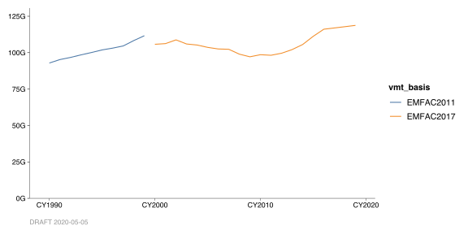

11 Changes in Methodology
“Changes in methodology” can be shown visually. Here, we do this for VMT data.
In our dataset, vmt_basis is either “EMFAC2011” (for years CY1990-1999) or “EMFAC2017” (for years CY2000 onward). We use vmt_basis as the variable to color by. This introduces a visual break.
#
# NOTE: here we're omitting the usual titling and captioning ... just so that we
# can see that `color = vmt_basis` is the key piece.
#
chart_data %>%
chart_annual_quantities_by(
color = vmt_basis)
The visual break is perhaps uncomfortable, but it is meaningful. It means that we don’t actually have an estimate of the year-over-year change between CY1999 and CY2000! The reader should not be able to see a downward-sloping segment between those two years, unless we have reason to believe that there actually was a decrease.
11.1 Annotating Your Data with *_basis
This is assuming we already have our chart_data in tidy form. Suppose we have our data in this form, but without a *_basis column.
show(head(SFBA_VMT_data))## # A tibble: 6 x 4
## year vtype vmt_unit vmt_qty
## <CY> <chr> <chr> <dbl>
## 1 CY1990 All vehicles VMT/yr 46633785580
## 2 CY1990 Passenger vehicles VMT/yr 44241653360
## 3 CY1990 Trucks VMT/yr 2014887248
## 4 CY1991 All vehicles VMT/yr 47805484120
## 5 CY1991 Passenger vehicles VMT/yr 45464314230
## 6 CY1991 Trucks VMT/yr 1981000432The key component is the vmt_basis column. For emission data, this might be ems_basis; for throughput data, it might be tput_basis. If you don’t already have this in your data, you can add it using a combination of (a) mutate() and (b) either if_else() or case_when().
#
# Here is an example using `if_else()`.
#
chart_data <-
SFBA_VMT_data %>%
mutate(
vmt_basis = if_else(
year < CY(2000),
true = "EMFAC2011",
false = "EMFAC2017",
missing = "Unknown"))#
# Here is an example using `case_when()`.
#
chart_data <-
SFBA_VMT_data %>%
mutate(
vmt_basis = case_when(
year < CY(2000) ~ "EMFAC2011",
year >= CY(2000) ~ "EMFAC2017",
TRUE ~ "Unknown"))